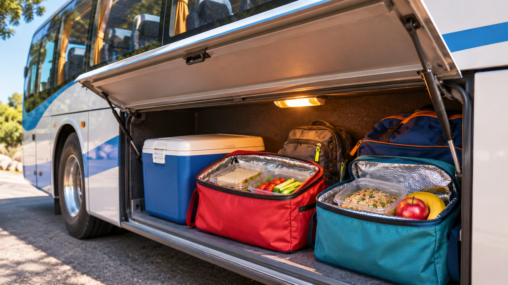

חימום וקירור
אוכל בדרכים
האוטובוס תקוע. מה קורה לארוחות?

ההכנות לטיול
"עוד עשרים דקות נגיע", אמר הנהג. נועה בת העשר הציצה בשעון. כעבור עשרים דקות האוטובוס עדיין עמד בפקק. הכיתה הייתה בדרך לסיור במוזיאון רחוק, ובתא המטען חיכו ארוחות הצהריים שנארזו מוקדם בבוקר. מבעד לחלון נועה ראתה את השמש מעל שורת המכוניות ושאלה: "אבל איפה נמצאת עכשיו הארוחה שלנו?"
המדריכה שירה בדקה מראש עם צוות בית הספר כיצד יש לשמור על כל ארוחה. חלק מהמאכלים אינם דורשים קירור וחלקם חייבים להישמר לפי הוראות מיוחדות. נועה לא ידעה מה נמצא בכל ארגז, אבל שירה ידעה דבר אחד: מראה וריח רגילים אינם מוכיחים שהמזון נשמר בבטחה.
הדרך מתארכת
בכניסה לעיר יש עומס תנועה. האוטובוס מתקדם לאט יותר מהצפוי ושעת ההפסקה נדחית. נועה רואה מבעד לחלון שהשמש גבוהה ושואלת אם הארגזים מתחממים בזמן הנסיעה.
שירה אינה יודעת מה הטמפרטורה בתוך כל ארגז. הנהג מסביר שתא המטען שונה מחלל הנוסעים: המזגן אינו מקרר אותו באותה דרך, ואי אפשר להניח ששני המקומות נמצאים באותם תנאים.
"אבל יש מזגן באוטובוס!" קורא תלמיד מאחור. נועה כמעט מסכימה, ואז מסתובבת אל דלת תא המטען, הרחק מהמושבים הקרירים. "אולי אצל הארגזים בכלל לא קריר", היא אומרת. במחברת היא מציירת שני מלבנים — תא הנוסעים ותא המטען — וליד כל אחד סימן שאלה. אותו אוטובוס, שתי סביבות שונות.
הפקק נפתח, ואז חוזר. נועה מבינה שהעיכוב אינו רק שינוי בלוח הזמנים: הוא מאריך את הזמן שבו האוכל נמצא בדרך. מה חשוב יותר — הטמפרטורה ברגע שיפתחו את הארגז או מה שעבר עליו מאז הבוקר?
אותו ארגז, תנאים אחרים
כשמגיעים למתחם החניה, חלק מהארגזים מוצבים במקום מוצל וחלקם עומדים כמה דקות ליד דלת האוטובוס. שני ארגזים נראים זהים מבחוץ, אבל אחד מהם נפתח כמה פעמים לצורך הוצאת ציוד.
נועה מבחינה שהמשפט "הכול היה בארגז" אינו מספר מה באמת עבר על האוכל. ייתכן שהטמפרטורה השתנתה בדרך, וייתכן שהייתה יציבה. בלי מידע אי אפשר לדעת.
מה חשוב לדעת
המדריכה רוצה להחליט אילו ארוחות אפשר להגיש לפי הוראות השמירה שלהן, ואילו ארוחות מחייבות בדיקה או טיפול של האחראים. היא מבקשת מהתלמידים לא לטעום דבר לפני שהצוות אישר את חלוקת המזון.
נועה חושבת על פרטים שלא הופיעו בתוכנית: מתי נארז האוכל, מהו משך הנסיעה בפועל והאם הייתה דרך לעקוב אחר התנאים מהרגע שהארגזים יצאו מבית הספר.
הזמן ממשיך לעבור
במהלך הביקור מתברר שגם ההפסקה הבאה תתאחר. המצב אינו "בעיה של רגע אחד", כי תנאי השמירה יכולים להשתנות לאורך זמן. בדיקה בודדת בסוף הדרך לא בהכרח מספרת מה קרה לפניה.
הכיתה עדיין יכולה ליהנות מהסיור, והצוות המבוגר מטפל בבטיחות המזון. ובכל זאת, נועה מבינה שהשאלה מעניינת גם למשלוחי תרופות, ציוד רפואי או מוצרים שדורשים תנאים מסוימים.
כשהמדריכה מוציאה את רשימת הארוחות, נועה מבחינה שליד כל פריט מופיעות הוראות שונות. שירה מסבירה ששני מאכלים שנראים דומים עשויים לדרוש תנאי שמירה אחרים, ושאי אפשר להחליף את הוראות הבטיחות בהתרשמות של תלמידים. נועה רוצה להציץ פנימה, אבל מבינה שההחלטה על חלוקת המזון צריכה להישאר בידי המבוגרים האחראים.
היא חושבת על ארגז שנראה מצוין מבחוץ: האם אפשר לדעת ממנו מה קרה בפנים כשהאוטובוס עמד, נסע ונעצר שוב? דווקא המידע שאיש לא ראה מעורר את השאלה החשובה ביותר.
מה ידוע ומה חסר
ידוע שהדרך התארכה, שהארגזים היו במקומות שונים ושלא כל סוגי המזון דורשים אותן הוראות שמירה. לא ידוע אילו טמפרטורות היו בכל ארגז, לכמה זמן נמשכו השינויים ומהם התנאים שנדרשו עבור כל ארוחה.
נועה שואלת אם חשוב יותר לדעת את הטמפרטורה עכשיו או לדעת כיצד היא השתנתה מאז הבוקר. האם מידע על הזמן והמקום עשוי לעזור להבין את הסיפור המלא?
לפני שממציאים
הכיתה אינה צריכה לתכנן קופסת אוכל לפני שהבינה מה בדיוק צריך להישמר, באילו תנאים ולכמה זמן. נועה מציעה להתחיל מבירור הצרכים ומאיסוף הנתונים החסרים.
איך אפשר לתאר שינוי בטמפרטורה לאורך מסלול? מתי מידע על מצב רגעי אינו מספיק? ומה יהיה חשוב למסור לאדם שאחראי לקבל החלטה בטיחותית?
רמז מעולם החלל
בחלליות משתמשים בשילוב של בידוד, ציפויים ובקרה על העברת חום כדי לשמור על טמפרטורות מתאימות למערכות. גם כאן כדאי לשאול אילו תנאים השתנו לאורך הזמן ואיזה מידע נדרש כדי להבין זאת.
אחרי הקריאה — בדף הצוות
שוחחו בצוות וענו על סמך המידע שבכתבה. אם חסר מידע, רשמו שאלה להמשך.
- למי אתם רוצים לעזור בסיפור?
- מה הוא מנסה לעשות ומה מקשה עליו?
- מה הוא צריך להיות מסוגל לעשות?
- מה עוד תרצו לברר לפני שתפתחו רעיונות?